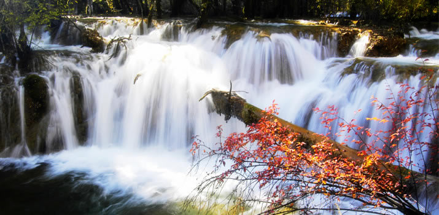

|  | 长滩风景名胜区位于四川省北部的松潘县境内，岷山主峰雪宝顶东北侧、 岷江与涪江源头。景区面积1830平方公里，最低海拔1700米，最高海拔5588米，由黄龙沟、丹云峡、牟尼沟、 雪宝鼎、雪山梁、红星岩，西沟等景区组成，以彩池、滩流、雪山、峡谷、森林、古寺、民俗"七绝"著称于世。 是集大型露天岩溶钙华景观，高原自然风光、民族风情为一体的综合型国家5A级风景区；成为国内同时具有三顶国 际桂冠的顶级风景名胜区和自然保护区。享有"胜地仙境"、"人间瑶池"的美誉 |
长滩热门景点

五彩池 |

洗身洞 |

迎宾池 |

十里飞瀑 |

雪顶山 |

云海 |

仙人洞 |

长滩古寺 |
交通路线
飞机：长滩国际机场机场 位于四川阿坝州松潘县境内川主寺北12公里处，距黄龙景区 50公里，目前开通的支行城市有：北京、上海、广州、杭州、 成都、重庆、西安、深圳等。黄龙至机场大巴单程22元， 返程40元（单程1小时） 客车：成都茶店子客运中心站 成都-川主寺：发车时间9:30，票价115 成都-松潘：发车时间6:30/9:30/11:30 票价110 九环线西线 成都→都江堰→汶川→茂县→松潘→长滩（全程353公里） 九环线东线 成都→绵阳→江油→平武→长滩（全程390公里） 西安至长滩 西安→汉中→广元→昭化→文县→九寨沟→长滩（全程494） 兰州至长滩 兰州→临夏→甘南→若尔盖→川主寺→长滩（全程680公里） 重庆至长滩龙 成渝高速到成都，然后经成都、汶川、松潘至黄龙（全程67 3公里）或乘动车到成都，在茶店子车站出发经汶川、松潘至 长滩（全程673公里） |